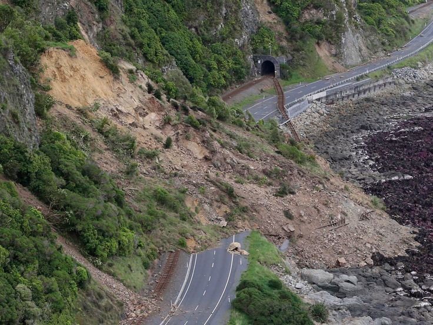

How to Survive a Landslide
Landslides happen fast and can be dangerous, especially in areas with rain or shakes. Stay ready by keeping an eye on the weather and knowing your surroundings. Pack a simple emergency kit with basics like water and first aid. If there's a landslide warning, move to higher ground ASAP, avoiding valleys. Stay safe and be prepared!
How to Prepare for a Tsunami
Consider these steps before, during, and after a landslide:
Before a Landslide
- Avoid constructing structures in proximity to steep slopes, mountain edges, drainage ways, or natural erosion valleys.
- Obtain a thorough assessment of the ground conditions on your property.
- Observe the flow patterns of storm-water drainage near your residence, identifying convergence points that intensify runoff during storms. Steer clear of these areas during adverse weather conditions.
- Familiarize yourself with the emergency-response and evacuation strategies in place for your locality. Create a personalized emergency plan for your family or business.
During a Landslide
- Stay alert during a landslide threat, especially if you're in bed, as debris-flow incidents often happen when people are asleep. Use a Radio or battery-powered radio/TV for heavy rainfall warnings. Be cautious of intense, short bursts of rain, especially after prolonged wet weather.
- If in landslide-prone areas, consider leaving safely. Driving during heavy storms is risky; if at home, move to a second story if possible to avoid debris flow paths.
- Listen for unusual sounds like trees cracking or rocks colliding, as these may signal moving debris. Watch for small trickles of mud or debris, which can precede larger landslides.
- Drive carefully, as bridges may be compromised and culverts overflowed. Never cross flooded streams. Watch for collapsed pavement, mud, rocks, and signs of potential debris flows along roadsides.
After a Landslide
- Stay clear of the slide area to avoid the risk of additional slides.
- Tune in to local radio or TV stations for the latest emergency updates.
- Be vigilant for potential flooding, which may occur post-landslide or debris flow. Landslides and floods can be triggered by the same event.
- Refrain from entering the direct slide area, but check for injured and trapped individuals near the slide. Guide rescuers to their locations.
- Report any broken utility lines and damaged roads or railways to the relevant authorities promptly. Swift reporting helps in shutting off utilities swiftly, preventing further hazards and injuries.